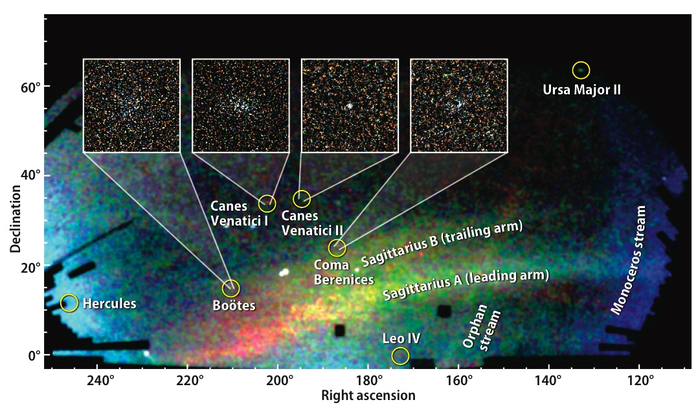

January 9, 2007
Sloan and the seven — make that eight — dwarfs:
Many more predicted

Researchers from the Sloan Digital Sky Survey (SDSS-II) announced the discovery of eight new dwarf galaxies, seven of them satellites orbiting the Milky Way. They resemble systems cannibalized by the Milky Way billions of years ago to build up its stellar halo and thick disk.
The systems discovered by the SDSS-II in the last three years are comparable in number to all the Milky Way satellites detected in the preceding 70 years. They help close the gap between the observed number of dwarf satellites and theoretical predictions.
Credit — Vasily Belokurov, SDSS-II Collaboration and reproduced by permission, copyright 2007, Astronomy magazine, Kalmbach Publishing Co.